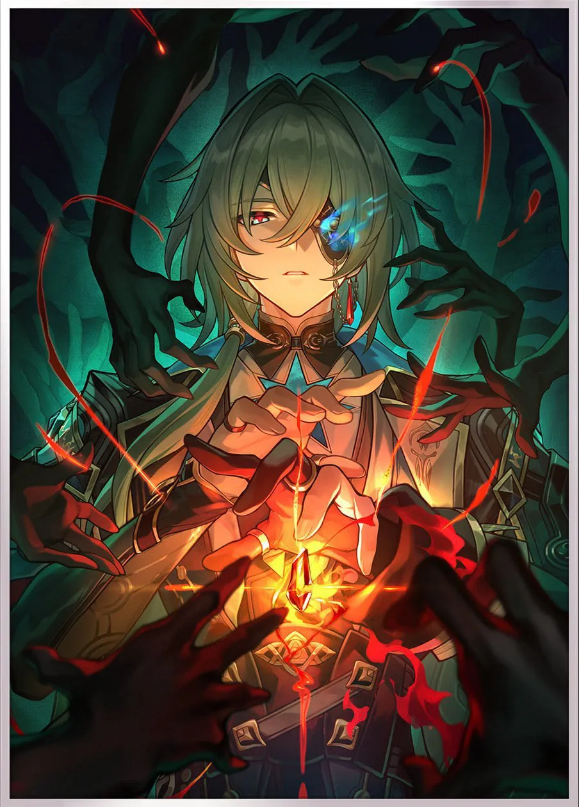
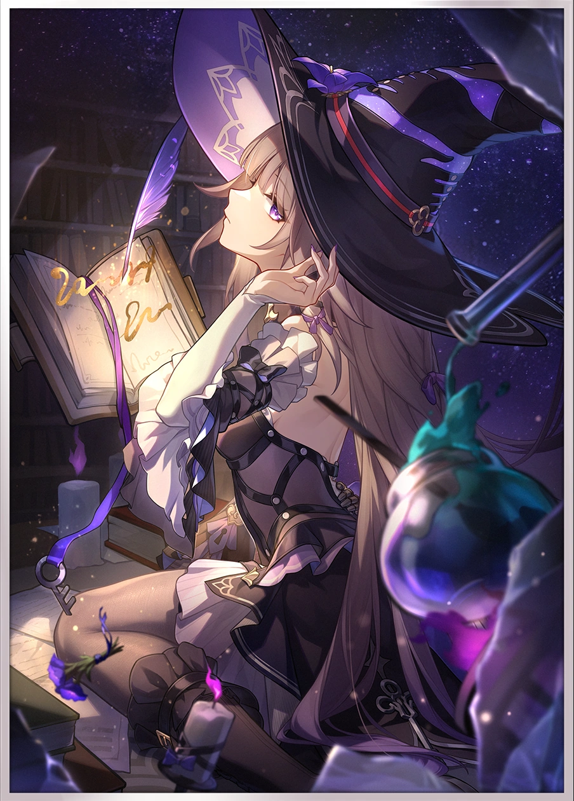
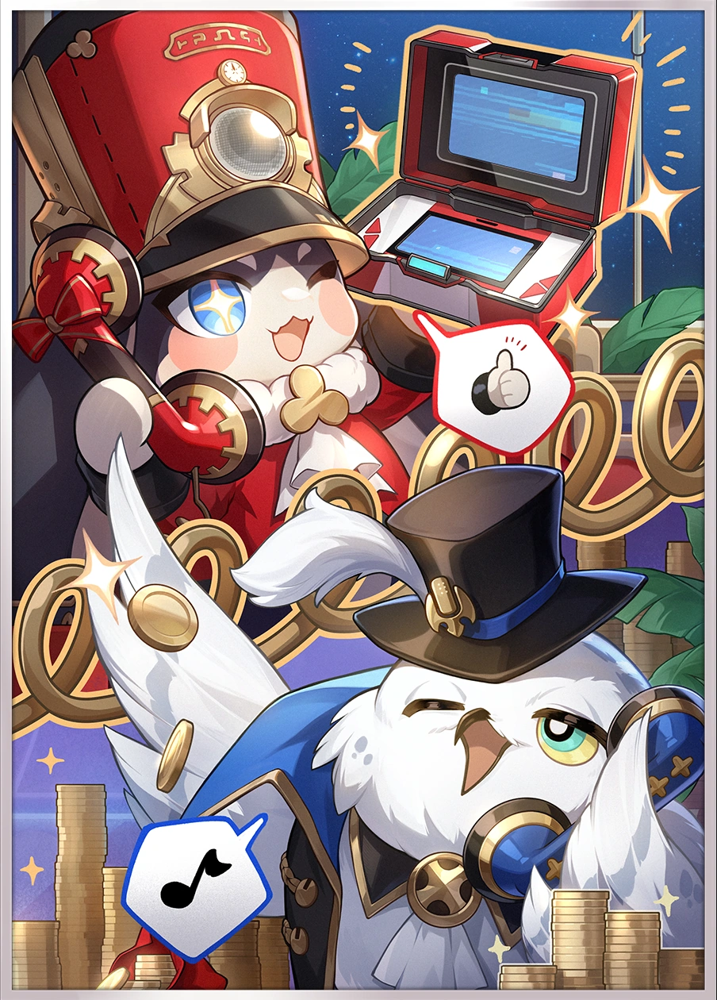
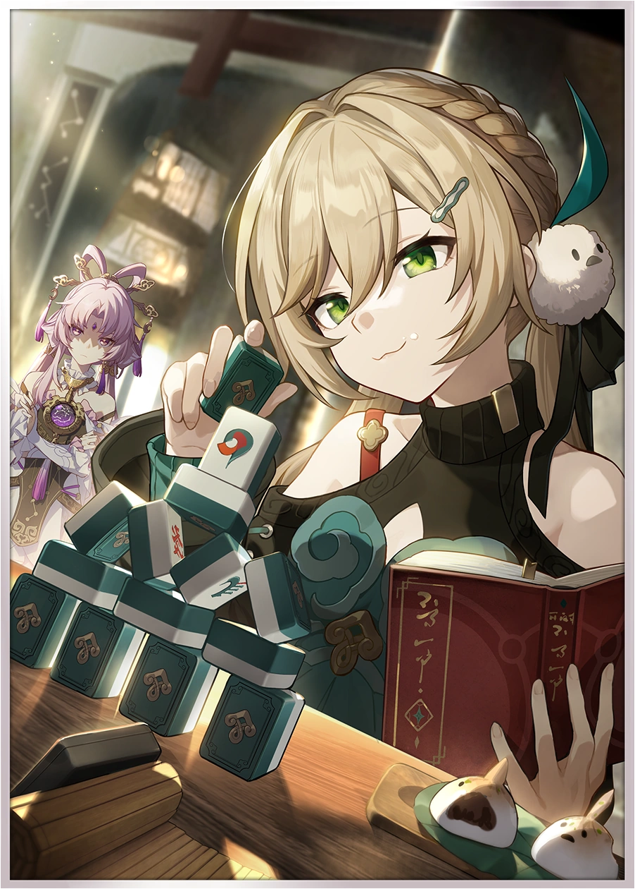
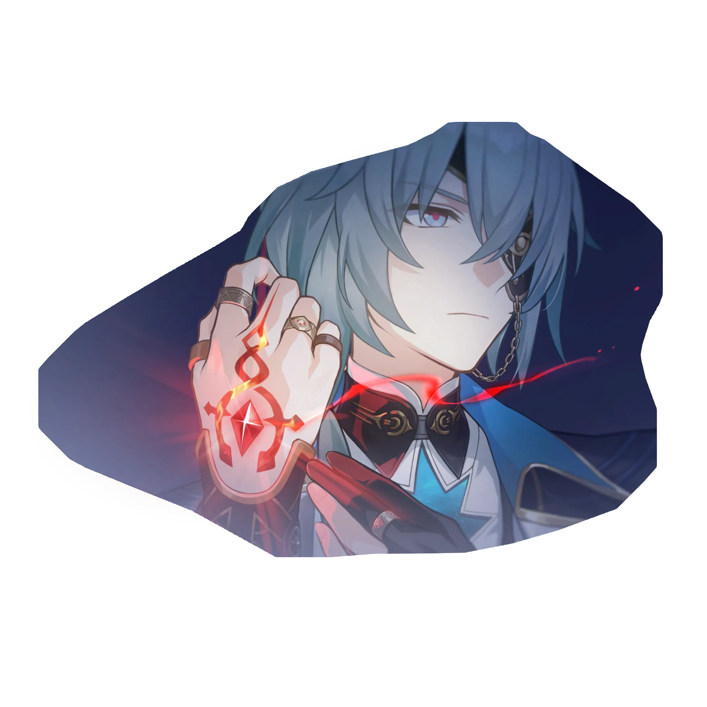

The Grove of Epiphany, where knowledge flourishes and philosophers are born.
Yet here stands Anaxagoras the blasphemer, the Chrysos Heir who challenges the Coreflame of
Reason. He is questioned: Would you defy the prophecy even if you must bear infamy, and insist
on driving the thorns of doubt into the Sacred Tree of wisdom?
——"Ridiculous. In a world full of lies, I am the only truth."
You can read the story and listen to the character's voice on the game's website.

Life Should Be Cast to Flames
Life Should Be Cast to Flames is a 5-star Light Cone for the path of Erudition. When
the wearer's turn starts, regenerates 10 Energy. If the enemy target has a Weakness
implanted by the wearer, increases the wearer's DMG dealt to it by 100%.
When an enemy target gets attacked by the wearer, the wearer decreases the target's DEF by
24%, lasting for 2 turn(s). The same types of effects cannot stack.

Into the Unreachable Veil
Into the Unreachable Veil is an 5-star Light Cone for the path of Erudition. Increases
the wearer's CRIT Rate by 20%. When the wearer uses Ultimate, increases the Skill and
Ultimate DMG dealt by the wearer by 100%, lasting for 3 turn(s). After the wearer uses
Ultimate, if this instance of Ultimate consumed 140 or more energy, recovers 1 Skill Point.

The Great Cosmic Enterprise
The Great Cosmic Enterprise is a 4-star Light Cone of the Erudition path. crease the
wearer's ATK by 16%. For every 1 different Weakness Type an enemy target has, increase the
DMG dealt to it by the wearer by 8%. Up to a max of 7 Weakness Types can be taken into
account for this effect.

Today Is Another Peaceful Day
Today Is Another Peaceful Day is a 4-star Light Cone of the Erudition path.
Each point of Energy increases DMG by 0.20~0.40%. A max of 160 Energy will be taken into
account for this.
‹
›
Magician, Isolated by Stars (E1)
Soul, True to History (E2)
Pupil, Etched into Cosmos (E3)

Blaze, Plunged to Canyon (E4)
Embryo, Set Beyond Vortex (E5)
Everything Is in Everything (E6)
Anaxa - Story
Character Details
The Grove of Epiphany, where knowledge flourishes and philosophers are born.
Yet here stands Anaxagoras the blasphemer, the Chrysos Heir who challenges the Coreflame of Reason.
He is questioned: Would you defy the prophecy even if you must bear infamy, and insist on driving
the thorns of doubt into the Sacred Tree of wisdom?
— "Ridiculous. In a world full of lies, I am the only truth."
Character Story: Part I
Unlocked at Character Level 20
"Ah, you were born in a remote city-state. Your parents departed early, leaving only your older sister
by your side, barely supporting the family on the meager income she earned from taming animals.
You have been reclusive and isolated since childhood. While your peers frolicked on the grassy
fields, you would hide alone in the shadows of trees and pick up fallen leaves from the ground.
'Why do the dromases not fly toward the sky?'
You look upon the dromas that grew up alongside you, mumbling to yourself.
'Maybe because this dromas used to be a nerd in its past life too!'
You've heard these words spoken all too often, but you never understood why it was used as a
form of
mockery.
If the gods are omnipotent, what do they fear death?'
In the temple where sacred teachings are recited, the very things deemed unquestionable
inevitably
stir your doubts.
'Out, Anaxagoras!'
The furious priest often throws you out of the temple.
Your sister never blamed you. Instead, she carved out a portion of her meager income to buy the books
and tools you longed for.
Screws, heavy pliers, delicate scales... At home, you tinkered with these instruments, utterly
immersed in the joy of creation.
At five years old, you were endlessly curious about life: A mechanical bird that sang on its
own, a
dromas incubator, artificial flowers that stayed forever vibrant — you boldly declared you'd become
the most knowledgeable person in the world. Tsk, tsk. How rare it is for a child's grand boasts to
be taken seriously by their family.
Later, she heard from passing merchants that there was an academy called the Grove of Epiphany, a
sacred place devoted to the pursuit of wisdom. You secretly memorized that name, thinking that if
you could one day go there with your sister, life wouldn't be so hard.
Later still, she finally managed to raise enough travel funds and asked a merchant friend to
give
you a ride so you could go study at the Grove.
Halfway along the journey, upon hearing that the black tide had struck, you hurriedly rushed
back —
the sight of that corroded ruin was truly unbearable to behold... Proud as you are, you even found
yourself kneeling on the ground. You weren't praying to the gods, were you..."
"Stop flipping through my mind, you naughty Titan." The man snapped out of his reverie, and an emotion — indeterminable if it was either rage or sorrow
— flickered in his right eye.
Character Story: Part II
Unlocked at Character Level 40
Number: 13
Subject: Chrysos Heir's Golden Blood Experiment
Materials: My blood
Records: After purifying the fluid, it resembles liquid gold, and reveals a seed-shaped
structure under the microscope. Fainted thrice while obtaining blood.
... Number: 55
Subject: Dissecting the soul of Titan creations
Materials: Three dying ██████ ███████ Titan creations, mercury potion, Antila flower extract
Records: Experimental subject abruptly went berserk upon dissecting to the core. Fortunately,
only I was severely injured, it did not harm anyone else. Subsequently, the alchemy equipment have been
refined. The pedigree chart of the souls of ██████ ███████ Titan is nearing completion.
... Number: 144
Subject: Attempt at the metaphase of the soul fusion
Materials: A soul flame donated by a scholar, Titan creations
Records: ████████, my dearest friend, according to your last wishes, your body has been
transformed into a flame that incinerates punishment, and your soul has turned into a cornerstone for
analyzing Titans.
... *The last page of scribbled comments*: It's been years since this had happened, the frigidness of death still stirs in my left eye, but
I can see "souls" of humans. That boiling heat is enough to fill the void.
Perhaps tomorrow, perhaps next year, or perhaps in the next instant—
I'll be accused and arrested. There will always be people who want me to lower my head and keep me
silent.
But sister, I'll always remember that I met you for the last time here. You didn't say anything.
But that was enough, I know I did the right thing.
Over the past decade, it has always been so—
"Failure is a stepping stone to success."
— Anaxa's parapsychology experiment log. The original copy has already been destroyed.
Character Story: Part III
Unlocked at Character Level 60
"Sages of the Grove:
Regarding how some scholars accuse me of the three great sins, 'academic defamation,' 'corrupting
youths,' and 'religious heresy,' I don't intend to entertain their cheap tricks, nor will I bother
defending myself. However, considering how this might allow everyone to better understand my
research, I'll briefly explain it.
According to them, I committed the sin of academic defamation when I publicly disparaged the classic
research of Titan studies and parapsychology, claiming them to be 'a black tide of the academic
world.' Answer me this: Was my evaluation incorrect? A study about whether Titans can stand on the
head of a pin, and a study that posits the nature of souls as water. They persist until this day
because of certain authorities. How is that any different from a mental black tide?
I studied in the Grove since I was a child, and thoroughly understand that the revolution of ideas can
only be achieved through criticism and suspicion. I encourage students to challenge my authority,
and this is what they claim to be 'corrupting youths.' Take Phainon and Castorice for example, when
they first began their studies, they were clueless about how to think and what logic is. Look at
them now, they can render me speechless sometimes! If this is what it means to 'corrupt' youths, I
cannot imagine what they regard as 'correct education.'
As such, some individuals accuse me of having excessively close ties with the Flame-Chasing Chrysos
Heirs, claiming that my theories help them seize the Coreflames. Indeed, I once consulted Tribios
about lost history, and both of my most brilliant students happen to be Chrysos Heirs as well. And
what of it?
I am also what they call a Chrysos Heir, but I've never have blind faith in prophecies. If gods are
truly the purest and most eternal beings that have ascended above the mortal world, then listen
well, the world only has one god, and that is the indestructible truth!
Only disciples of truth can continue on this path, and the authorities who proclaim themselves
to be
sages fear the fall of god.
You suggested that both parties take a step back to deescalate the situation... My apologies, but I
don't intend to do that. On the contrary, I would like to give a word of advice to those who wish to
accuse me—
The future world will understand me, and all of you who raise accusations against me should be more
afraid than me when I await my verdict!"
— An improvised speech by Anaxa, during a meeting of the sages
Character Details
Unlocked at Character Level 80
"Even up till today, I still disagree with that bizarre Flame-Chase Journey. However, there is one
statement that left a deep impression — Losses are a constant on the Flame-Chase journey.
I never believed that the Chrysos Heirs shared the same destiny, but I am undoubtedly also on the path
of losses.
Yet, I have not lost enough... In comparison to what I pursue, I have not lost enough to fulfill
the
law of equivalent exchange.
After I had proposed the theory that the nature of souls of Titans and humans are no different, and
that souls are constructed from seeds of wisdom, I have been waiting for a chance to prove it once
and for all...
Now, the opportunity has presented itself! It came rather unexpectedly, but also right on time.
Today, I can finally make up for the regret, akin to a calamity, from numerous years ago.
I gained inspiration from death, and should repay as such.
My body shall become the vessel to forge the Coreflames of gods, and my soul shall become the
chains
that force the gods to bow. That will become the ultimate evidence for my theory!
I am incredibly happy now.
I once smiled like this, when I first created a mechanical bird that could fly in the sky. My
hands
once trembled like this, when I developed a new life through incubation.
My future students, if you see these words, it proves that my endeavor has failed at the final step,
falling just before the break of dawn.
Use my results to the fullest extent, and make me the subject of your research! Step over my
body
and take the torch from my hands. Use me as the firewood to ignite the flames that will bring light
to the truth!
Do not fear blasphemy—
It is already a sin to transcend the gods, so what if you become a god!"
— One of the echoes in Anaxa's memories after the Grove had fallen, which vanished because nobody
discovered it